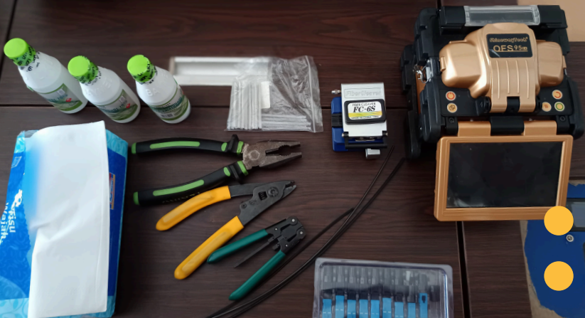
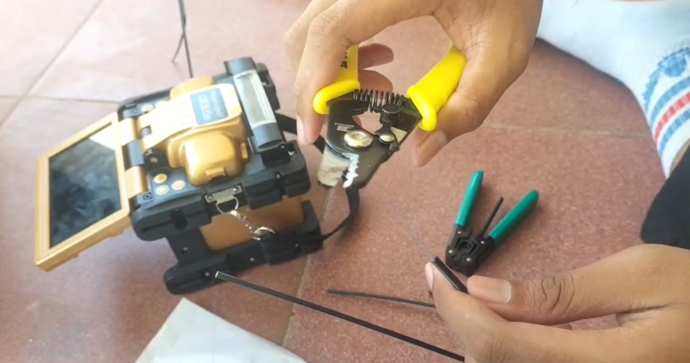
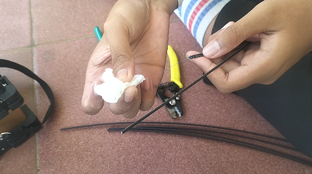
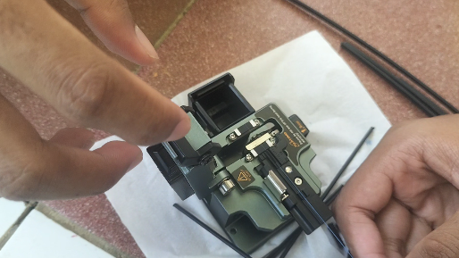
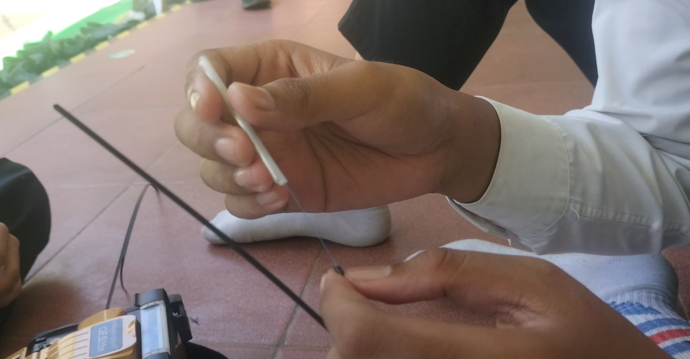
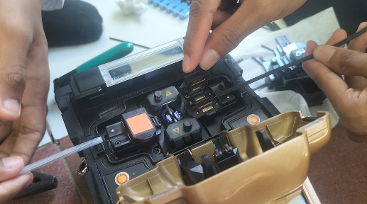

| NO | NAMA | NIS | KELAS |
|---|---|---|---|
| 1 | AISY AZBIA ZAKY | 1234 | XI TJKT 1 |
| 2 | ANDI JAKA SATRIO | 4567 | XI TJKT 1 |
| 3 | DESVINO ALIF ARIYANTO | 7891 | XI TJKT 1 |
| 4 | MOHAMAD REHAN FEBRIANSAH | 1234 | XI TJKT 1 |
| 5 | FALIH AKHDAN | 5678 | XI TJKT 1 |
Crimping fiber optic adalah proses menyambungkan atau menghubungkan konektor ke ujung serat optik
menggunakan alat khusus yang disebut crimping tool. Tujuannya adalah agar kabel fiber dapat
terhubung
dengan perangkat lain (seperti patch panel, ODF, atau perangkat jaringan) secara kuat dan
stabil,
baik
secara mekanis maupun optis.
Crimping tool (alat penjepit konektor)
Fiber cleaver (pemotong serat optik presisi)
Stripping tool (pengupas pelindung kabel)
Alcohol & tissue (untuk membersihkan serat optik)
Konektor fiber optic
OFS Optical Fusion Splicer
Sleeve Heat Shrink (untuk melindungi sambungan)

Pengupasan Lapisan Kabel
Kupas lapisan luar kabel (jacket) sekitar 3–5 cm menggunakan fiber stripper.
Lepas buffer tube dan coating hingga tampak inti serat (core) dan cladding.
Lakukan dengan hati-hati agar serat tidak patah.

Pengupasan Lapisan Kabel
Bersihkan bagian serat yang telah dikupas menggunakan tisu tanpa serat dan alkohol 99%.
Hal ini penting agar tidak ada debu atau minyak yang dapat mengganggu transmisi cahaya.

Pemotongan Serat (Cleaving)
Gunakan fiber cleaver untuk memotong serat dengan ujung rata dan halus.
Potongan harus sempurna agar loss cahaya rendah saat disambung ke konektor.

Pemasangan Konektor Sambungan
Masukkan boot pelindung (jacket boot) ke kabel terlebih dahulu.
Lalu, masukkan serat ke konektor fiber optic hingga mencapai posisi yang benar.
Pastikan tidak ada lipatan atau celah udara di dalam konektor.

Proses Crimping
Gunakan crimping tool untuk menjepit konektor agar menempel kuat pada kabel.
Tekan dengan mantap, tetapi jangan terlalu keras agar serat tidak patah.
Pastikan hasil crimping kuat dan konektor tidak longgar.
